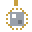
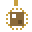
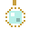
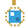
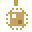

Jeweler
The Jeweler sells these goods. The jeweler buys gems, pearls, crowns, coins and runes.
Buying anything that can be crafted costs half of what its materials are worth. Shops have levels 1 to 3; better goods appear as the shop is upgraded.
Stock
| Item | Price | |
|---|---|---|
 Fire rune Fire rune | 295 coins | |
 Frost rune Frost rune | 73 coins | |
 Life rune Life rune | 205 coins | |
 Mana rune Mana rune | 115 coins | |
 Keen rune Keen rune | 340 coins | |
 Ruby Ruby | 60 coins | |
 Sapphire Sapphire | 60 coins | |
 Emerald Emerald | 45 coins | |
 Amethyst Amethyst | 30 coins | |
 Whetstone charm | 1400 coins | |
 Ironbark charm | 1200 coins | |
 Wind charm | 1500 coins | |
 Lucky coin Lucky coin | 1800 coins | |
 Fisher's charm | 900 coins | |
 Miner's charm | 1000 coins | |
 Astrolabe Astrolabe | 220 coins | |
| Cooling band | 400 coins | |
| Sprinter's anklet | 600 coins | |
 Swift boots Swift boots | 350 coins |